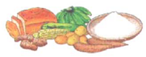
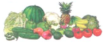
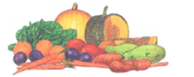
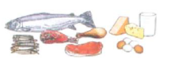
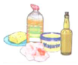

Counsel Clients to eat a 4-star diet
1 starStaples:grains such as maize, wheat rice, millet, sorghum, and roots and tubers such as cassava and potatoes

1 star
Legumes:such as beans, lentils, peas, groundnuts, and seeds such as sesame

1 star
Vitamin A rich fruits:grains such as maize, wheat rice, millet, sorghum, and roots and tubers such as cassava and potatoes

1 star
Vitamin A rich vegetables:such as dark-green leaves, carrots, yellow sweet potato and pumpkin, eggplant, and cabbage

1 star
Animal-source foods:grains such as maize, wheat rice, millet, sorghum, and roots and tubers such as cassava and potatoes

Oils and fats such as margarine, butter, palm oil, shea butter and other vegetable oils improve the absorption of some vitamin and provide extra energy.
